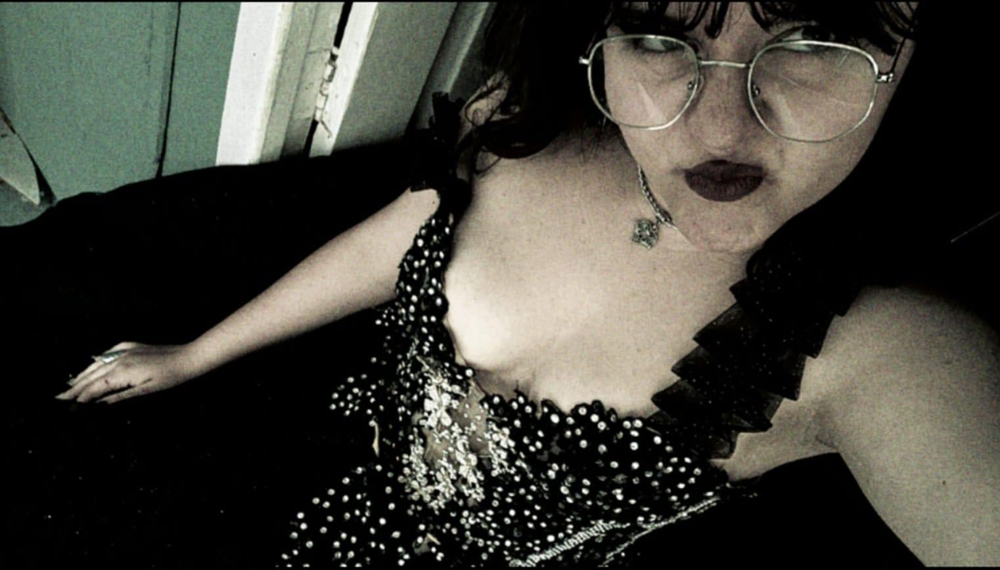

No dia 22 de março de 2010, nasceu uma pessoinha incrivel, que apenas 11 anos depois fui conheçe-lá. Matt hoje completa a idade que sempre esperou, seus 16 aninhos, 16 anos de puro amor em pessoa (as vezes ksksks ). Bom, quero te desejar um parabéns, tuudo de bom pra você, sempre se lembre que oc é uma pessoa incrível e extremamente importante pra mim! Sinceramente obrigado por simplesmente ser você sabe? Você sempre esteve ali, sempre, mesmo com todos os desentendimentos, sempre esteve ali pra conversar, brincar, rir, você faz meus dias mais alegres de toda forma que imaginar, cada abraço, beijinho na cabeça, cada risada contigo faz total diferença pra mim e deixa meu dia mais leve. Eu amo tanto tanto TANTO sua amizade que não imagina palavras que sejam suficiente para expressar isso, eu espero de coração poder te levar pra vida toda. Eu amo os seus mais simples detalhes e o jeito que demonstra amor pela gente, matt, você é único, literalmente. Agora para e pensa, 6 anos de amizade já! Que me tornei melhor amiga da melhor pessoa que já conheci em toda minha vida, acho que todo mundo deveria ter um Matt, mas não o meu KSKSKSK. Porque como disse oc é único, leal, gentil, carinhoso, compreensível, inteligente, legal, estiloso, esforçado, dedicado, amoroso, honesto entre outras diversas qualidades. Tenho até ciúmes af KSKSKKS. Enfim, eu te amo muito, você merece o mundo meu bem, conte comigo pra absolutamente tudo e aproveite seu dia néé, espero que goste da festinha que organizamos pra ti, amanhã você vai entender oque eu estava programando hehehe, eu queria que fosse algo mais legal desculpa, mas estou fazendo de coração viu? Amo oc demais, parabéns denovo.